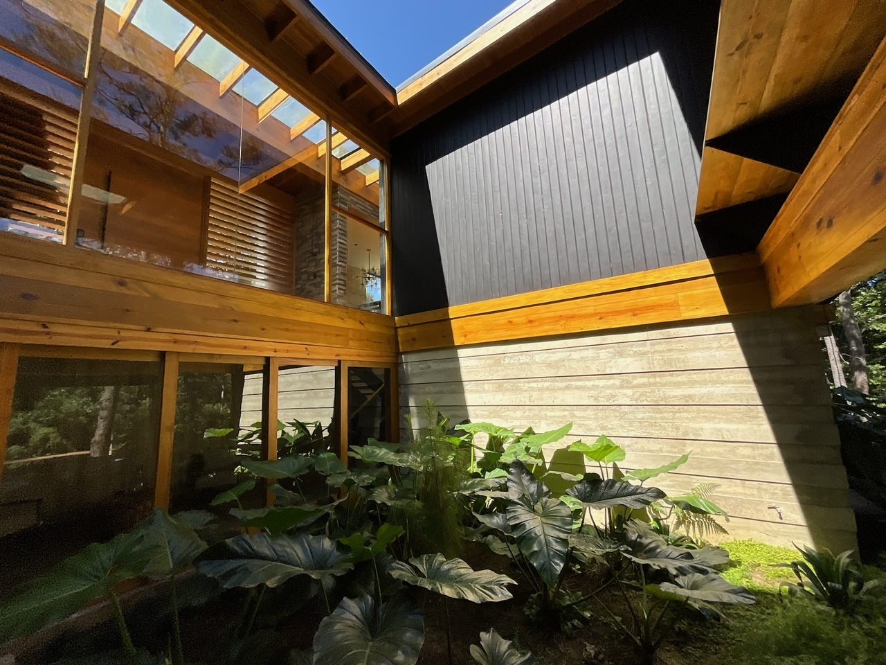
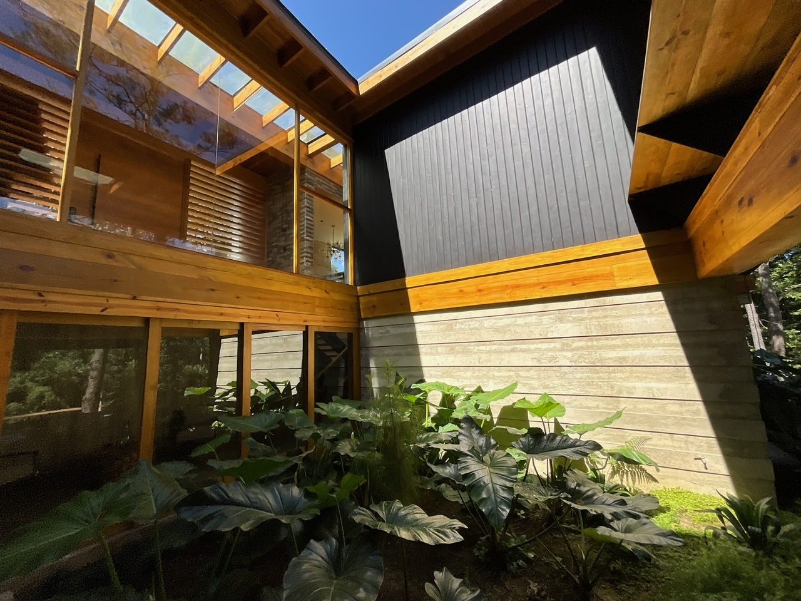
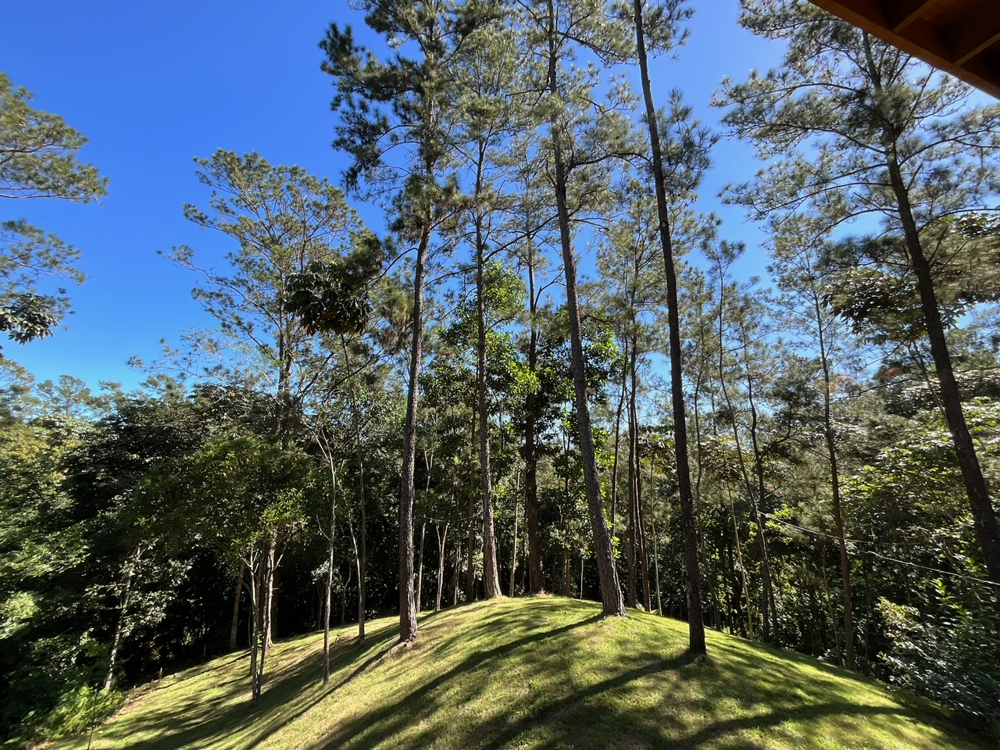
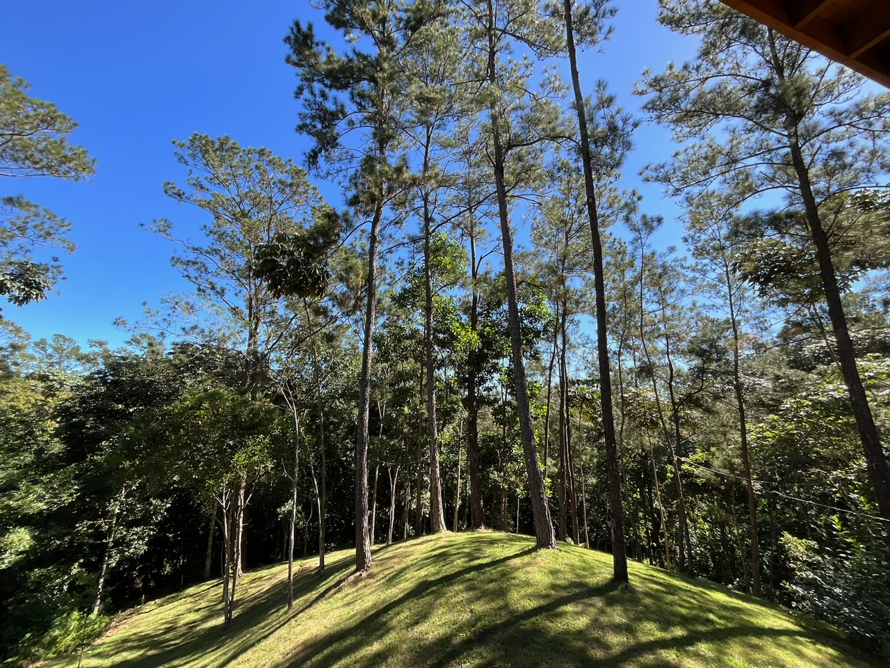
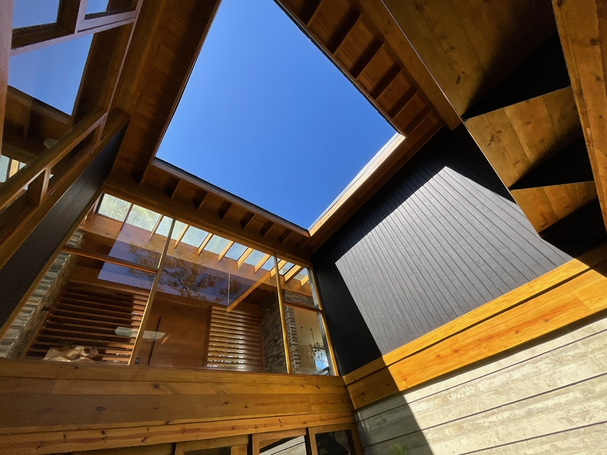
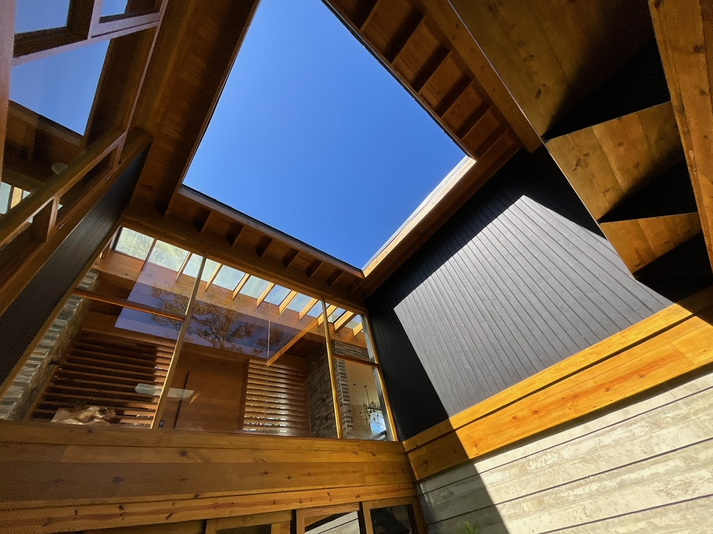

 


 

Sobre The BridgeHouse
The BridgeHouse es un proyecto familiar enclavado en las impresionantes montañas de Jarabacoa, República Dominicana. Rodeada de imponentes pinos y un refrescante clima. Esta impresionante Villa ofrece el escape perfecto al ajetreo y estrés del dia a dia. La propiedad contiene 3 habitaciones y puede alojar hasta 10 huéspedes. The BridgeHouse está diseñada para una lujosa comodidad, la relajación y el constante contacto con la bella naturaleza que le rodea. Su imponente arquitectura combina la elegancia con la naturaleza. Sus amplios ventanales ofrecen vistas a la belleza del exterior y la sensación de sentirse en pleno bosque.
¡Notificar!